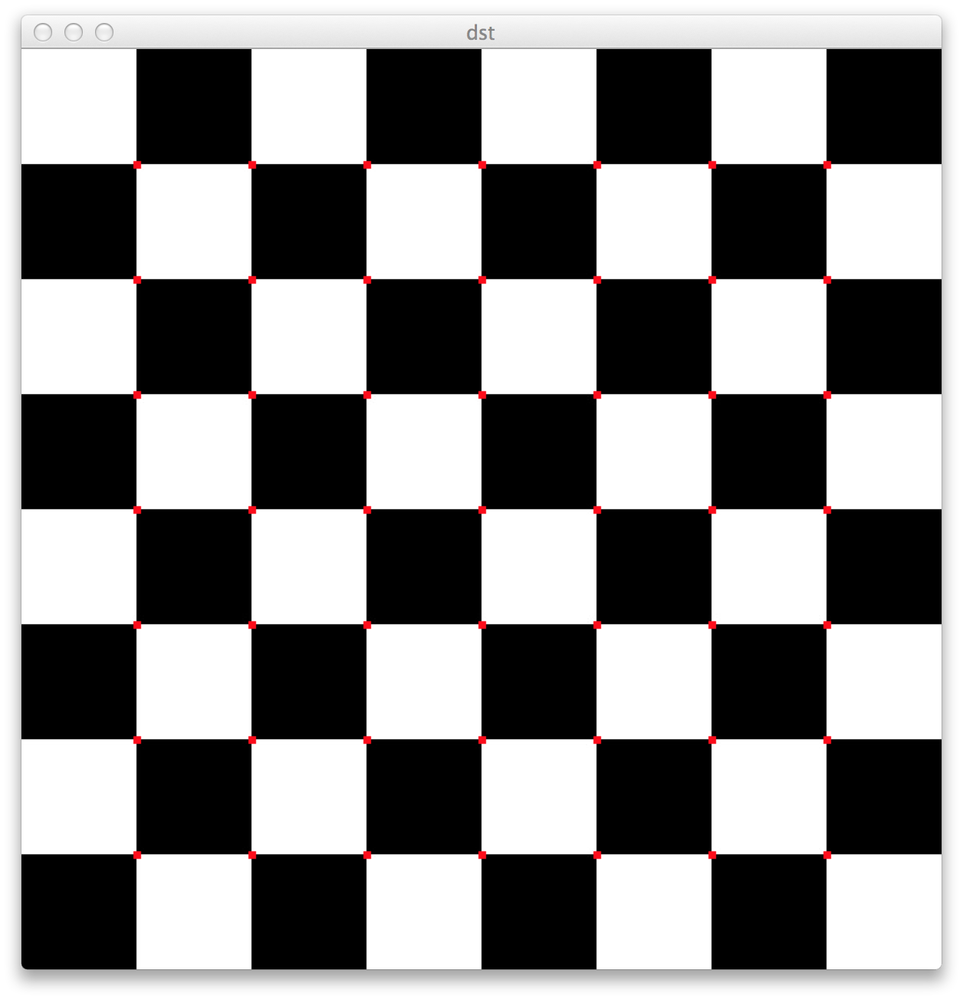

Onkur Sen
I am a second-year Master’s student in computer science at Stanford University. This is my portfolio.


Corner Detection Algorithms
I re-implemented the Harris and Shi-Tomasi corner detection algorithms. This was done as part of a project for CS 231A (Computer Vision) at Stanford University.
The example on the left is taken from a photo by Ansel Adams. I also used a simple chessboard as a calibration example:
